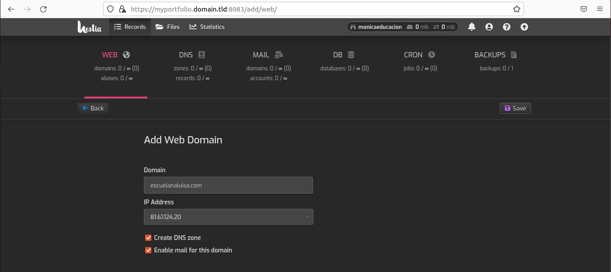

¿Qué es?
Es un panel de administración web para servidores dedicados y compartidos
¿En qué se basa?
Se basa en el código fuente de VestaCP, pues es un fork del mismo

Evolución
Hestia ha tenido un buen desarrollo independiente, evolucionando y mejorando aspectos como su interfaz gráfica pulida
Características principales
Destaca la opción para gestionar espacios webs. Permite elegir entre diferentes versiones de PHP, FTP, DNS, servidor de correo, BBDD...
Configuración
Por defecto viene configurado con Apache2 y Nginx como proxy
Velocidad
Las webs son mucho más rápidas debido a la configuración
Certificados SSL
Opción de agregar certificados SLL de manera gratuita gracias a Let's Encrypt
Instalación
COMPROBAR SISTEMAS SOPORTADOS
La lista de sistemas operativos soportados es la dada a continuación:
- Debian 10
- Debian 11
- Ubuntu 18.04 LTS
- Ubuntu 20.04 LTS
- Ubuntu 22.04 LTS
INICIAR SESIÓN COMO ROOT
1 |sudo -i
DESCARGAR EL INSTALADOR
Debemos descargar el instalador. Se puede hacer introduciendo en consola el siguiente comando:
1 |wget https://raw.githubusercontent.com/hestiacp/hestiacp/release/instll/hst-install.sh

EJECUTAR EL INSTALADOR
Continuando con la instalación del panel de control de Hestia, es el momento de ejecutar el instalador. Para ello necesitamos introducir en consola la siguiente isntrucción:
1 |bash hst-install.sh
Si hemos escrito bien el comando, llegaremos a la siguiente pantalla en consola. Introducimos "y", presionamos enter y continuaremos.

Nos solicitará la dirección e-mail del administrador. En nuestro caso, usaremos un correo propio
Ahora nos pedirá un nombre de dominio completo (FQDN: Fully Qualified Domain Name).

La instalación de HestiaCP puede extenderse varios minutos. Esperamos a que se complete. El sistema tiene que reiniciarse. Así que pulsamos cualquier tecla y procederá a hacerlo
Tendremos que introducir una contraseña para la cuenta de admin que acabamos de crear. Para ello, escribimos en la consola el siguiente comando:
1 |/usr/local/bin/v-change-user-password admin contraseña

INSTALACIÓN SIN ASISTENCIA
1 |bash hst-install.sh --interactive no --email email@dominio.extensión --password contraseña--hostname hostname.domain.tld -f
*Más opciones y ejemplos sobre la instalación el la Documentación
PANEL DE CONTROL DE HESTIA
CREAR USUARIO
Para crear un usuario debemos hacer click en add user y, como resultado, tenemos el siguiente formulario:
Rellenamos los datos pertinentes (nombre de usuario, nombre, correo electrónico, contraseña…)
Podemos no permitirle que acceda al panel de control (si le damos a éste, desaparece la opción de enviarle correo de bienvenida), y de enviarle un correo de bienvenida, asignar su rol y escoger un paquete:
Le damos a guardar (botón de "save") y nos aparece que el usuario se ha añadido correctamente
Si entramos con el nombre de usuario, nos muestra el siguiente panel en el cual se le permite crear tantos dominios web, al igual que DNS, cuentas de correo y bases de datos tantas como le sea necesario, a excepción del backup, que sólo permite una
FILES
Si vamos al apartado de archivos, justo al lado de records, nos sale lo siguiente:
STATISTICS
En el apartado de estadísticas, nos sale el siguiente histórico de registros, en que nos muestra la actividad del usuario (dominios, DNS, bases de datos…etc)
CREAR DOMINIO
Volviendo a la cuenta de administrador, en este caso, de dominios sólo se puede crear uno, que ya la había creado previamente, podemos echarle un vistazo a verla por dentro:
Por otro, lado encontramos:
COMO USUARIO (USER)
CREAR DOMINIO WEB
Para crear un sitio web desde el panel de hestia, vamos a la sección web, y hacemos clic en add web domain:
Escogemos el nombre de la página que queramos crear, la dirección IP ya la tenemos asignada, y nos aparecen a continuación dos opciones: el de crear automáticamente una DNS, y el de habilitar el correo electrónico para el dominio a crear. Le damos a guardar y nos sale que el dominio web se ha creado correctamente
DNS
Anteriormente, vimos cómo se creaba un dominio web como usuario y, al crearla, si nos pasamos a la sección DNS (Domain Name System), tenemos creada una “zona” DNS:
Y que, si hacemos clic en esa zona DNS tenemos registros DNS, que son un conjunto de instrucciones que dan información sobre el dominio, como su dirección ip asociada o las peticiones dirigidas a ese dominio:
CORREO
Al igual que con el DNS, también tenemos un “dominio” de correo asignado a escuelanaluisa.com. Para crear una cuenta de correo, le damos a añadir, y nos sale lo siguiente:

Y en opciones avanzadas, podemos limitar la cuota de Mb, crear alias, mover a, limitar la cantidad de correos por hora…etc.
Y en esta vemos que se ha creado la cuenta con éxito
BASE DE DATOS
También podemos crear una base de datos, haciendo clic en la sección BD, add database:
Y en opciones avanzadas tenemos seleccionada el host, y el charset (en este caso, la universal UTF-8):
BACKUP
Al hacer clic sobre create backup, se muestra un mensaje que comunica que se ha creado automáticamente, podemos ver el resultado en esta imagen: